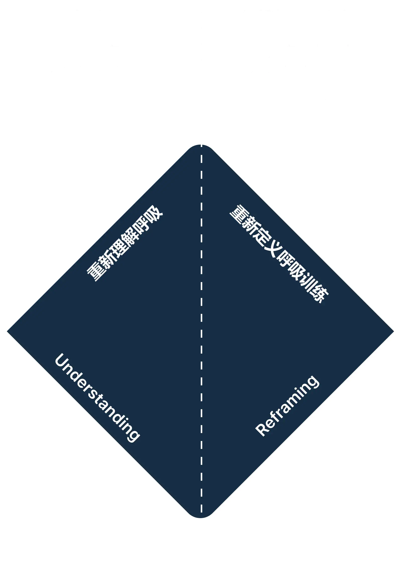
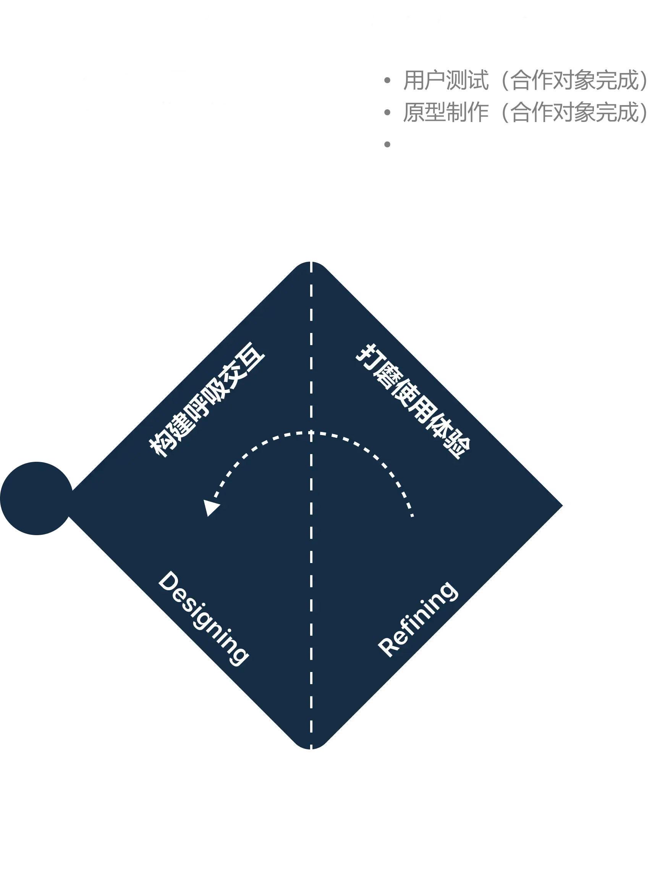
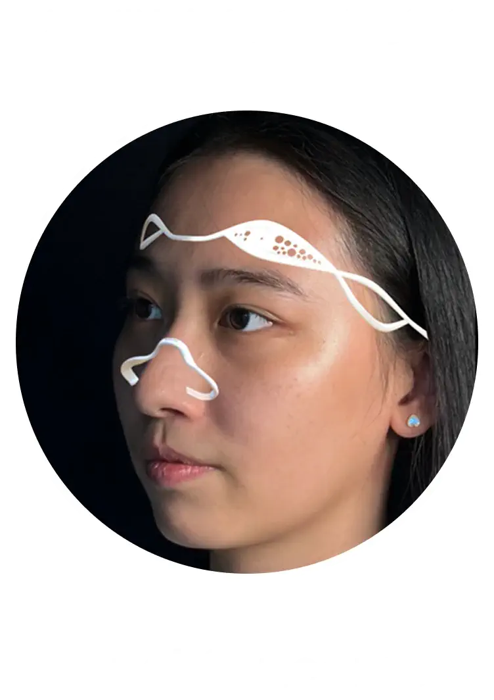
鼻汐 — 低注意力呼吸支持设计
基于“宁静技术”理念的呼吸支持可穿戴交互探索
可穿戴设备设计 | 用户体验设计 | 宁静技术理念运用
有效的呼吸支持，
或许发生在无需注意它的时候
从自身体验出发，重新理解呼吸训练
基于个人呼吸体验的研究切入，分析现有呼吸训练产品并发掘机会点
项目背景：从长期鼻炎体验，到重新理解呼吸
我长期受到鼻炎与呼吸不畅的影响，这让我逐渐意识到：
呼吸不仅是一个生理行为，也会影响注意力、情绪状态与身体感受。
这种持续的身体体验，引发了我对“呼吸与身心状态之间关系”的持续关注。
呼吸调节：从单一放松工具，到身心调节入口
在进一步了解后，我发现呼吸会通过影响副交感神经系统，进而影响情绪调节、
睡眠与注意力等多种生理机能。这促使我开始思考：
是否能够通过设计，帮助人们在日常生活中更自然地用呼吸调节自身状态？
现有产品分析：两种分离的功能设计
我开始研究现有产品呼吸训练产品，包括呼吸训练 App、苹果手表呼吸功能、磁吸鼻贴与口含式训练器等不同类型。
我发现现有产品主要呈现出 2 种 不同的设计路径，在设计上分别体现为 2 种 不同的能力方向：
一类提供丰富的呼吸模式，但依赖视觉、听觉或震动提示完成认知-呼吸引导；另一类通过直接身体干预实现低负担引导，但功能较为单一。
这让我自然地想到了设计方向：能否设计一种既具备自然身体化引导能力，又能够支持不同状态需求的呼吸交互方式？
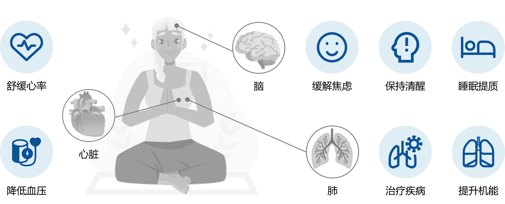
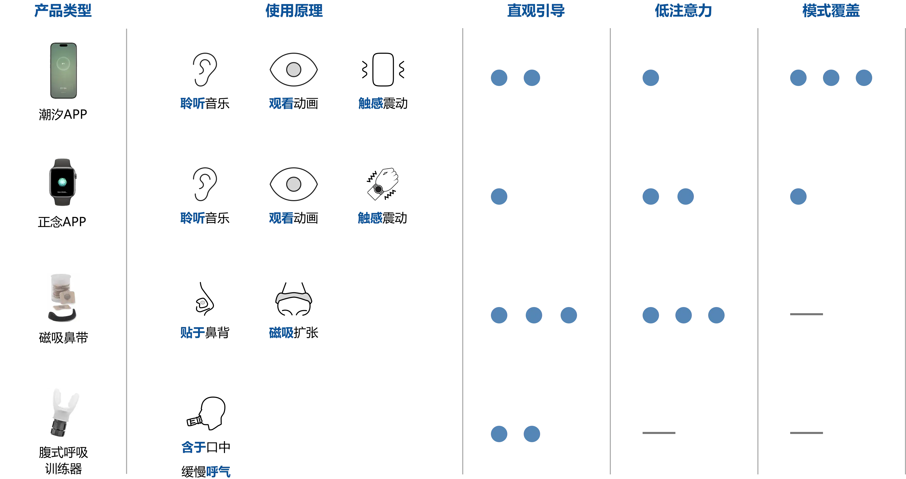
让呼吸更自然地回归日常
基于用户访谈与宁静技术理念，重新思考呼吸支持的交互方式
用户访谈研究：从呼吸训练到真实需求
为了进一步验证我的想法，我访谈了 10 位长期存在慢性呼吸疾病、焦虑或睡眠问题的用户。
大多数受访者都认可呼吸训练的价值，但真正坚持使用相关产品的人却并不多。
进一步分析后，我将用户需求归纳为三个方向：
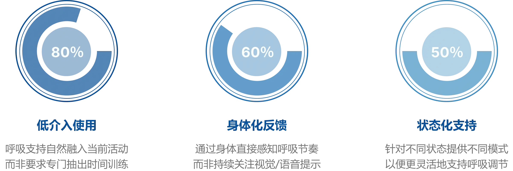
宁静技术理念：一种“退后的交互”
受到“宁静技术（Calm Technology）”理念启发，我开始重新思考用户语境。
技术不一定需要占据注意力中心，它也可以退到感知边缘，以更自然的方式存在。
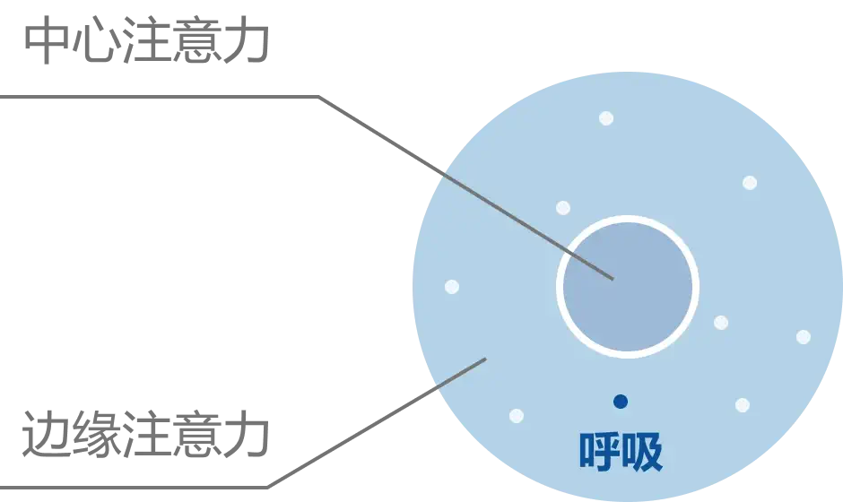
“
出色的交互设计可以让人们用最少的精力实现目标。
”
设计构思：直接作用于鼻孔的多模式智能可穿戴呼吸设备
基于上述研究，我将设计方向逐渐聚焦为三个核心原则，并提出了对应的构想：
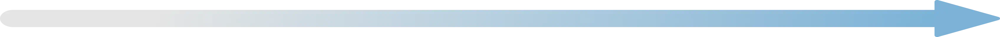
发现痛点
解决痛点
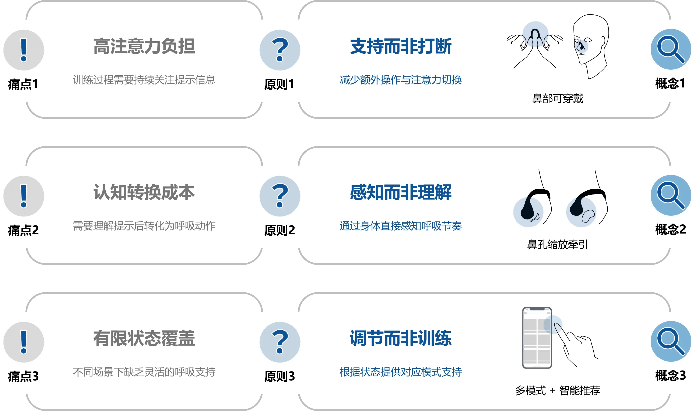
从概念构想到系统实现
围绕身体化引导与状态支持，我构建了产品的核心功能与机制
让呼吸支持在需要时自然介入
受宁静技术理念启发，我希望呼吸支持能从独立训练变为持续陪伴。通过可穿戴形态，用户无需将注意力持续放在设备本身，而是在工作、放松等多场景中自然获得呼吸引导。
引导机制构思：让呼吸节奏被身体直接感知
我尝试寻找一种动力系统，把力直接作用于鼻翼位置，完成动作牵引：
- 鼻孔扩张：通过向外牵引鼻翼，引导用户吸气
- 自然恢复：恢复鼻翼原始位置，引导用户呼气
- 鼻孔挤压：通过向内挤压鼻翼，引导用户屏气
从固定训练到状态适配：脑电（EEG）检测
不同状态下，用户需要的呼吸节奏并不相同，其与心理状态息息相关。因此，我试图将 EEG 信号感知和分析作为高级功能融入产品，基于实时数据，为用户推荐更适合的呼吸模式，实现更个性化的呼吸支持
原理实现：基于电磁驱动的呼吸引导方案
我进一步探索了产品的动力机制，并发现电磁驱动机制最为合适。通过控制通电线圈的电流方向，可以产生与磁体之间的吸力和斥力。将发生微小位移的一侧贴于鼻翼，便可完成物理牵引，引导呼吸。
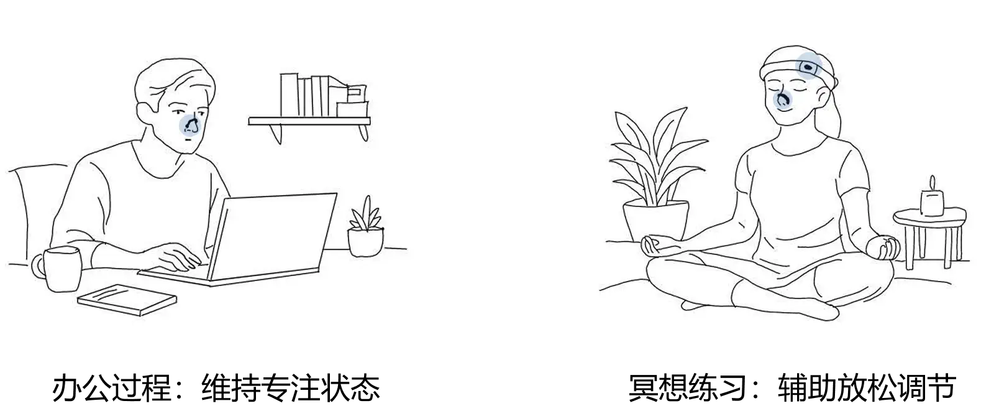
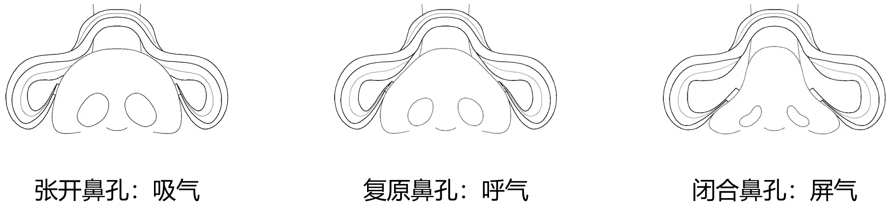
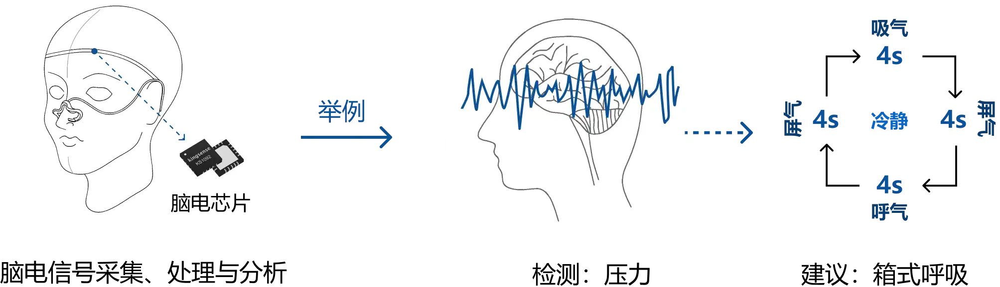
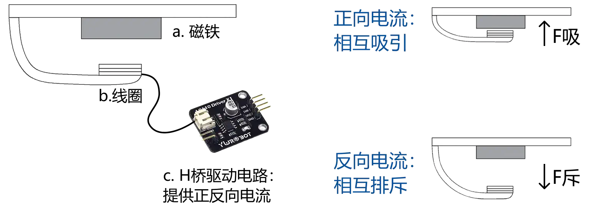
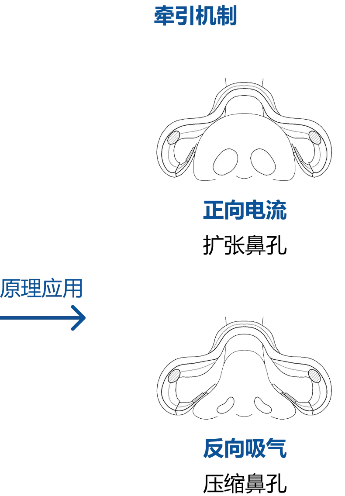
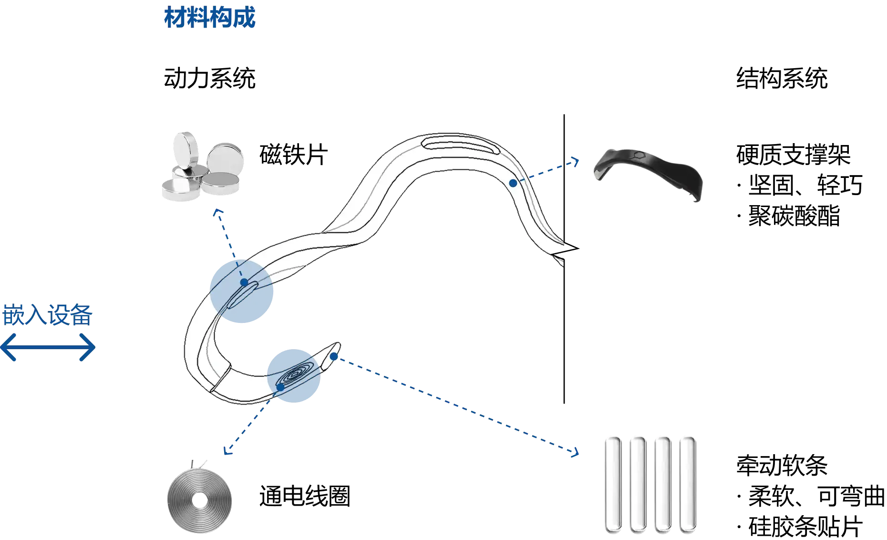
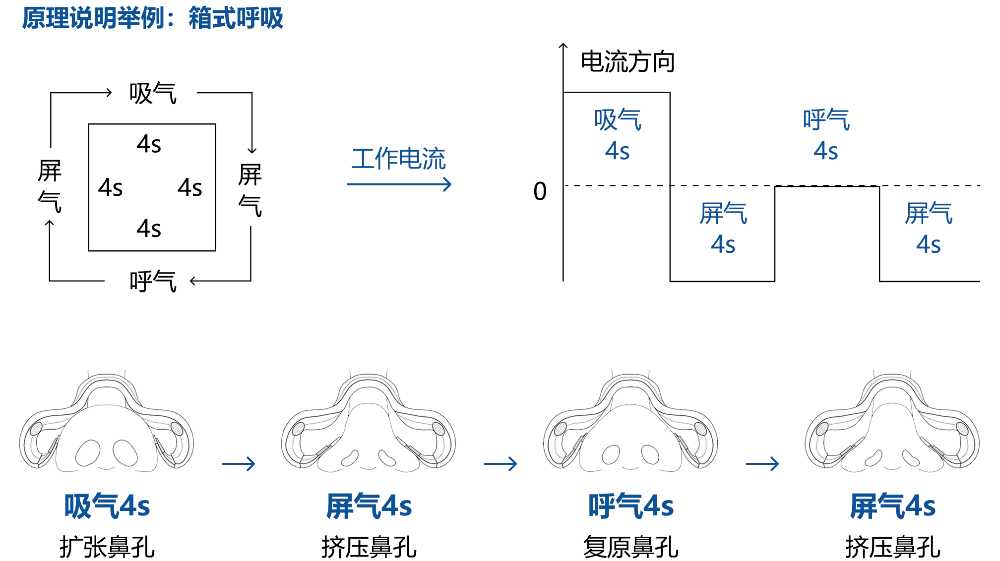
在迭代与测试中优化用户体验
从佩戴体验到交互流程，通过原型验证寻找更自然的呼吸支持方式
形态与结构：佩戴体验的持续探索
重点关注舒适性、稳定性与美观性，通过多轮原型测试寻找更适合鼻部佩戴的形态和结构方案：
交互流程：减少不必要的操作负担
为了降低操作负担，我尽可能减少用户主动操作，通过简化控制逻辑与连接流程，使呼吸支持更顺畅地融入使用过程：
支点位置
· 贴合鼻型
· 不易脱落
造型设计
· 流畅曲线
· 简约美学
交互手势
· 符合习惯
· 无压迫感
佩戴方式
产品结构
鼻部放大
触控操作
蓝牙连接
App
模式
- 脑电状态检测
- 呼吸模式推荐
- 实时呼吸指导
- 模式切换建议
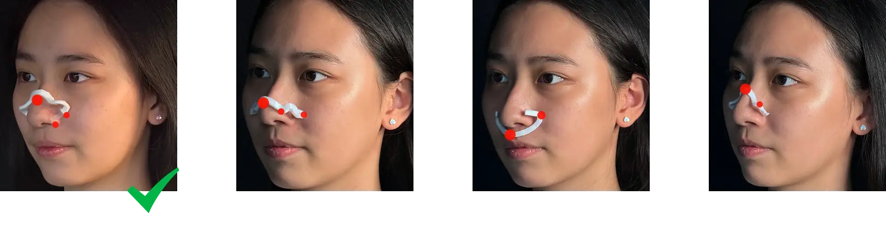
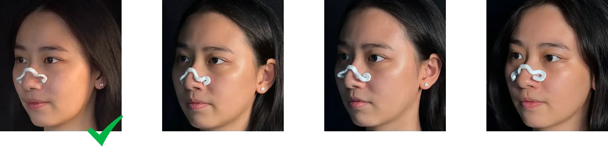
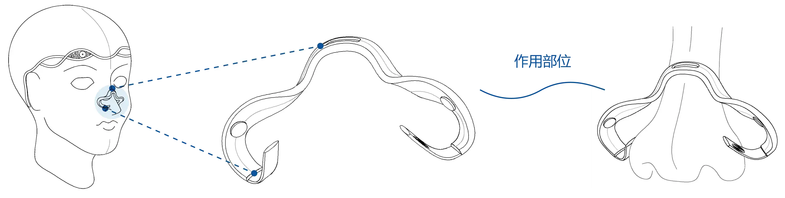
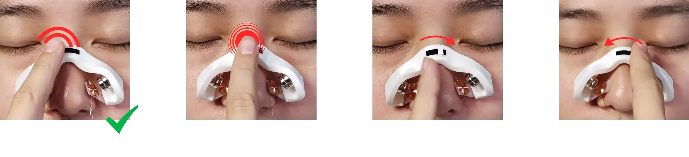
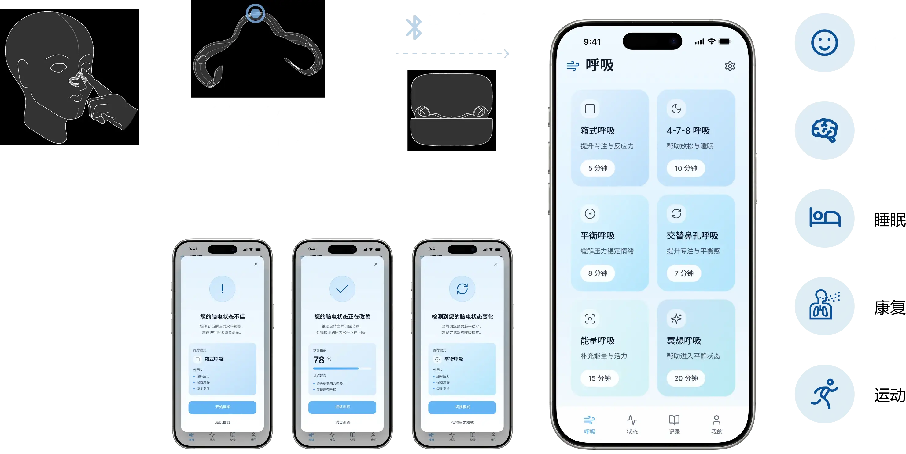
原型制作与产品展示
将设计方案转化为可感知的产品体验
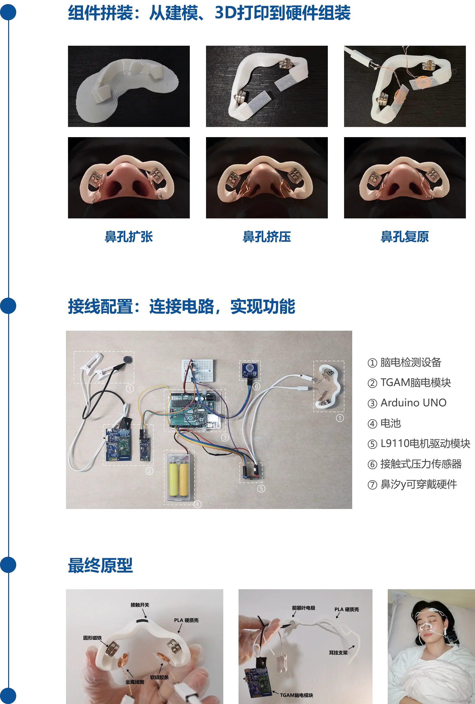
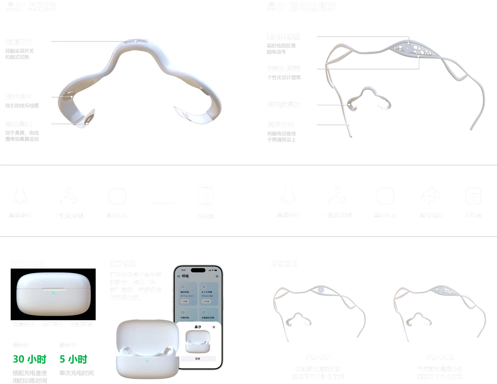